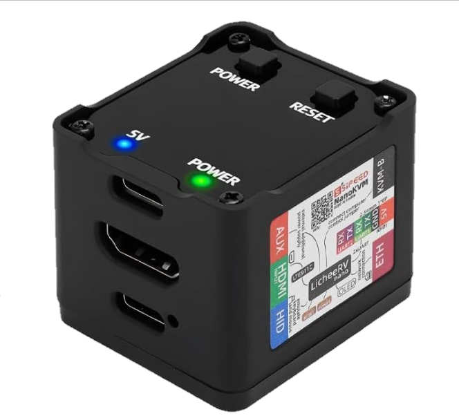
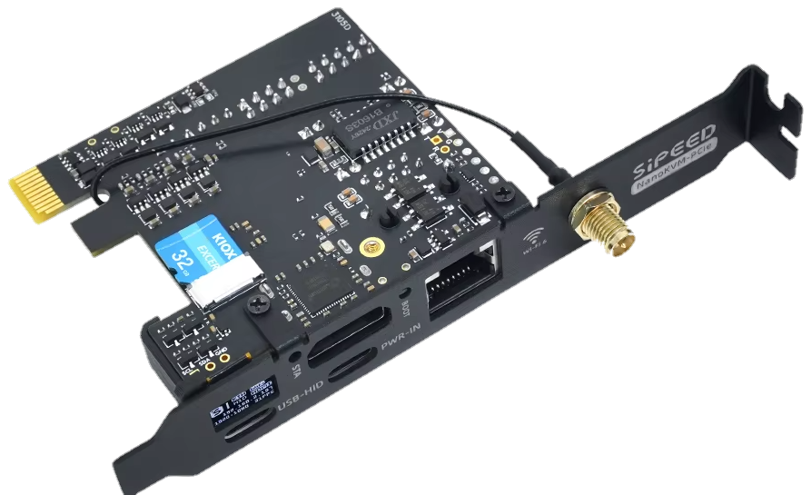
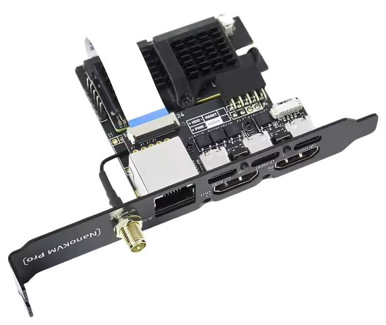
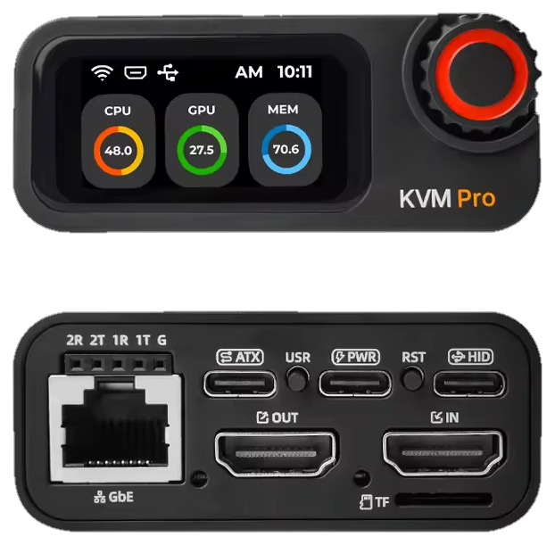

The machine's own OS agent goes silent, the witness takes over on standby power, and a Concierge session — that you approve — reads the screen, cycles the power, and watches it come back. Press play.
Four connections, all of them dumb on purpose. The PC can't tell the witness from a monitor and a keyboard — which is exactly why it works when nothing else does.
Move your cursor across the panels. The hollow ring is your hand; the glowing dot is what the remote screen would show. Standard capture answers a beat behind — Pro stays glued to you.
standard capture · access cube & internal — pro capture · internal pro & access pro
Same job at every price: keep the machine on your graph when its OS can't help. They differ in how sharp they see and where they live.

A palm-sized cube with its own network cable. Enough to remote in, see the screen, type, and power-cycle the machine. The budget way in — and it still does the whole job.
The same platform on a card that lives inside the case — no desk clutter, powered by the PSU's standby rail, wired straight to the front-panel header. Ships standard in every CEC build. The Pro card steps up to 4K capture, gigabit, and Wi-Fi 6.



The desk unit. 4K capture at 20–30 ms — sharp enough to game on remotely — with its own screen telling you what it sees, gigabit plus Wi-Fi 6, and a 4K loop-out so your real monitor stays plugged in. Alive even when the PC isn't.
No second app, no vendor portal. A witness claims into your fleet like any laptop — its console opens in the same tab, its power button is a button in the drawer, and sharing it follows the same grants as everything else.
A fresh witness announces itself on your LAN — before it knows the time, before it's touched the internet. Your app hears it, you tap Claim, and it's wearing your name.
It calls out over mDNS on a claim channel that never leaves your network. Clock-free — it works before NTP.
Every device of yours on that LAN shows the newcomer instantly. No IPs typed, no cloud round-trip.
It appears in your claim sheet — tap Claim, done. Attach it to a machine and it renames itself to match.
allmystuff-local-claim-v1 · clock-free · public claims off by default · mesh transport by MyOwnMesh
Connection keys are made and stored on the device, never on a CEC server. Nobody at CEC can connect on their own.
Video travels directly between your devices, end-to-end encrypted. A relay, when needed, only passes data it can't decrypt.
Repair sessions start with your approval, every action is logged, and you can watch live or revoke at any moment.
Firmware and software are open source and self-hostable. No subscription is ever required to use your hardware.
Out-of-band · works with the OS dead · no apps installed on the PC